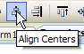
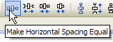
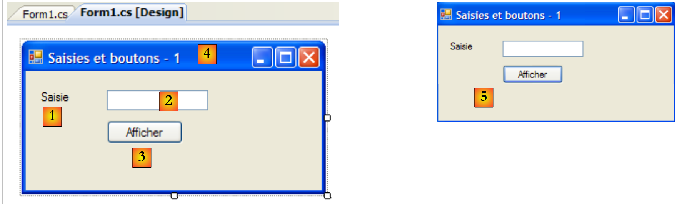
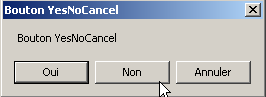
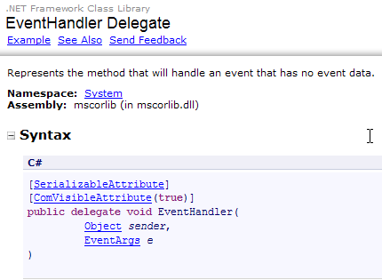
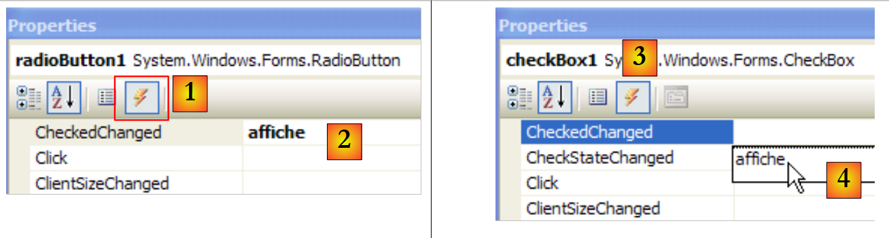
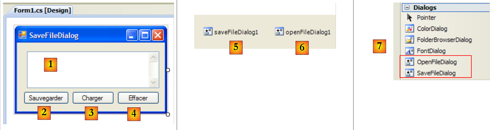
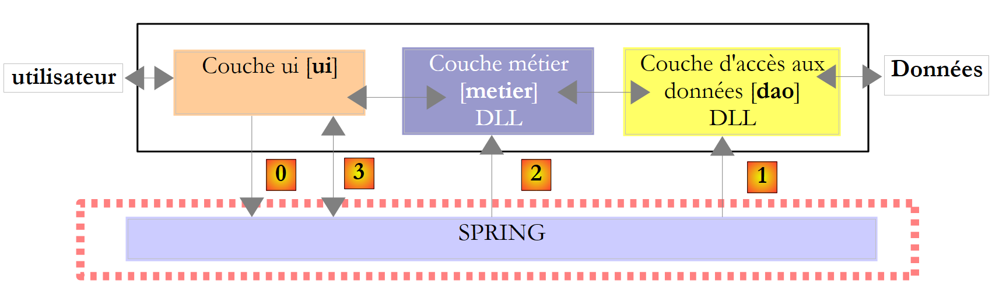
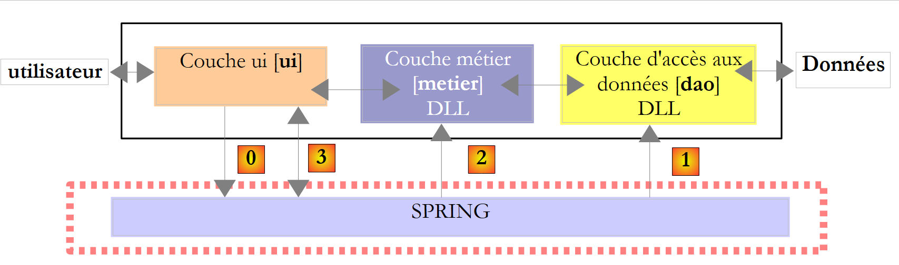

7. Interfacce grafiche con C# e VS.NET
7.1. Nozioni di base sulle interfacce grafiche
7.1.1. Un primo progetto
Realizziamo un primo progetto di tipo "Applicazione Windows":
 |
- [1]: creare un nuovo progetto
- [2]: di tipo Applicazione Windows
- [3]: il nome del progetto non ha importanza per il momento
- [4]: il progetto è stato creato
 |
- [5]: si salva la soluzione corrente
- [6]: nome del progetto
- [7]: cartella della soluzione
- [8]: nome della soluzione
- [9]: verrà creata una cartella per la soluzione [Chap5]. I progetti di quest'ultima saranno contenuti in sottocartelle.
 |
- [10]: il progetto [01] nella soluzione [Chap5]:
- [Program.cs] è la classe principale del progetto
- [Form1.cs] è il file sorgente che gestirà il comportamento della finestra [11]
- [Form1.Designer.cs] è il file sorgente che incapsulerà le informazioni sui componenti della finestra [11]
- [11]: il file [Form1.cs] in modalità "progettazione" (design)
- [12]: l'applicazione generata può essere eseguita premendo (Ctrl-F5). Viene visualizzata la finestra [Form1]. È possibile spostarla, ridimensionarla e chiuderla. Si hanno quindi gli elementi di base di una finestra grafica.
La classe principale [Program.cs] è la seguente:
using System;
using System.Windows.Forms;
namespace Chap5 {
static class Program {
/// <summary>
/// Il punto di ingresso principale dell'applicazione.
/// </summary>
[STAThread]
static void Main() {
Application.EnableVisualStyles();
Application.SetCompatibleTextRenderingDefault(false);
Application.Run(new Form1());
}
}
}
- riga 2: le applicazioni con moduli utilizzano lo spazio dei nomi System.Windows.Forms.
- riga 4: lo spazio dei nomi iniziale è stato rinominato in Chap5.
- riga 10: all'esecuzione del progetto (Ctrl-F5), viene eseguito il metodo [Main].
- righe 11-13: la classe Application appartiene allo spazio dei nomi System.Windows.Forms. Contiene metodi statici per avviare/chiudere le applicazioni grafiche di Windows.
- riga 11: facoltativa - consente di assegnare diversi stili visivi ai controlli inseriti in un modulo
- riga 12: facoltativa - imposta il motore di rendering dei testi dei controlli: GDI+ (true), GDI (false)
- riga 13: l'unica riga indispensabile del metodo [Main]: istanzia la classe [Form1], che è la classe del modulo, e le richiede di essere eseguita.
Il file sorgente [Form1.cs] è il seguente:
using System;
using System.Windows.Forms;
namespace Chap5 {
public partial class Form1 : Form {
public Form1() {
InitializeComponent();
}
}
}
- riga 5: la classe Form1 deriva dalla classe [System.Windows.Forms.Form], che è la classe padre di tutte le finestre. La parola chiave partial indica che la classe è parziale e che può essere completata da altri file sorgente. È il caso in questione, in cui la classe Form1 è suddivisa in due file:
- [Form1.cs]: in cui si trova il comportamento del modulo, in particolare i suoi gestori di eventi
- [Form1.Designer.cs]: in cui si trovano i componenti del modulo e le loro proprietà. Questo file ha la particolarità di essere rigenerato ogni volta che l’utente modifica la finestra in modalità [conception].
- righe 6-8: il costruttore della classe Form1
- riga 7: richiama il metodo InitializeComponent. Si nota che questo metodo non è presente in [Form1.cs]. Si trova invece in [Form1.Designer.cs].
Il file sorgente [Form1.Designer.cs] è il seguente:
namespace Chap5 {
partial class Form1 {
/// <summary>
/// Variabile di progettazione obbligatoria.
/// </summary>
private System.ComponentModel.IContainer components = null;
/// <summary>
/// Rimuovi tutte le risorse in uso.
/// </summary>
/// <param name="disposing">true se le risorse gestite devono essere eliminate; altrimenti, false.</param>
protected override void Dispose(bool disposing) {
if (disposing && (components != null)) {
components.Dispose();
}
base.Dispose(disposing);
}
#codice generato dal Windows Form Designer
/// <summary>
/// Metodo richiesto per il supporto del Designer - non modificare
/// il contenuto di questo metodo con l'editor di codice.
/// </summary>
private void InitializeComponent() {
this.SuspendLayout();
//
// Form1
//
this.AutoScaleDimensions = new System.Drawing.SizeF(6F, 13F);
this.AutoScaleMode = System.Windows.Forms.AutoScaleMode.Font;
this.ClientSize = new System.Drawing.Size(196, 98);
this.Name = "Form1";
this.Text = "Form1";
this.ResumeLayout(false);
}
#fine regione
}
}
- riga 2: si tratta sempre della classe Form1. Si noti che non è più necessario ripetere che essa deriva dalla classe Form.
- righe 25-37: il metodo InitializeComponent chiamato dal costruttore della classe [Form1]. Questo metodo creerà e inizializzerà tutti i componenti del modulo. Viene rigenerato ad ogni modifica del modulo in modalità [conception]. Viene creata una sezione, denominata région, per delimitarla (righe 19-39). Lo sviluppatore non deve aggiungere codice in quest’area: verrà sovrascritto alla successiva rigenerazione.
Inizialmente è più semplice non prestare attenzione al codice di [Form1.Designer.cs]. Esso viene generato automaticamente e rappresenta la traduzione in linguaggio C# delle scelte effettuate dallo sviluppatore nella modalità [conception]. Prendiamo un primo esempio:
 |
- [1]: selezionare la modalità [conception] facendo doppio clic sul file [Form1.cs]
- [2]: fare clic con il tasto destro del mouse sul modulo e selezionare [Properties]
- [3]: la finestra delle proprietà di [Form1]
- [4]: la proprietà [Text] rappresenta il titolo della finestra
- [5]: la modifica della proprietà [Text] viene applicata sia nella modalità [conception] che nel codice sorgente [Form1.Designer.cs]:
private void InitializeComponent() {
this.SuspendLayout();
...
this.Text = "Mon 1er formulaire";
...
}
7.1.2. Un secondo progetto
7.1.2.1. Il modulo
Iniziamo un nuovo progetto denominato 02. A tal fine seguiamo la procedura illustrata in precedenza per la creazione di un progetto. La finestra da creare è la seguente:
 |
I componenti del modulo sono i seguenti:
n. | nome | tipo | ruolo |
1 | labelSaisie | Etichetta | una dicitura |
2 | textBoxSaisie | TextBox | un campo di immissione |
3 | buttonAfficher | Pulsante | per visualizzare in una finestra di dialogo il contenuto del campo di immissione textBoxSaisie |
Per creare questa finestra, si può procedere come segue:
 |
- [1]: fare clic con il tasto destro del mouse sul modulo al di fuori di qualsiasi componente e selezionare l'opzione [Properties]
- [2]: la finestra delle proprietà della finestra appare nell’angolo in basso a destra di Visual Studio
Tra le proprietà del modulo da tenere in considerazione:
per impostare il colore di sfondo della finestra | |
per impostare il colore delle immagini o del testo nella finestra | |
per associare un menu alla finestra | |
per assegnare un titolo alla finestra | |
per impostare il tipo di finestra | |
per impostare il tipo di carattere dei testi nella finestra | |
per impostare il nome della finestra |
Qui impostiamo le proprietà Text e Name:
Campi di immissione e pulsanti - 1 | |
frmSaisiesBoutons |
 |
- [1]: selezionare la casella degli strumenti [Common Controls] tra quelle proposte da Visual Studio
- [2, 3, 4]: fare doppio clic in successione sui componenti [Label], [Button] e [TextBox]
- [5]: i tre componenti sono presenti nel modulo
Per allineare e ridimensionare correttamente i componenti, è possibile utilizzare gli elementi della barra degli strumenti:
 | |||||||||
 |  | ||||||||
Il principio di formattazione è il seguente:
- selezionare i diversi elementi da formattare insieme (tenendo premuto il tasto Ctrl mentre si clicca per selezionare gli elementi)
- selezionare il tipo di formattazione desiderato:
- (continua)
- le opzioni Align consentono di allineare i componenti in alto, in basso, a sinistra, a destra o al centro
- le opzioni Make Same Size consentono di impostare la stessa altezza o la stessa larghezza per i componenti
- l'opzione «Horizontal Spacing» consente di allineare orizzontalmente i componenti con spazi di uguale larghezza tra loro. Lo stesso vale per l'opzione «Vertical Spacing» per l'allineamento verticale.
- L'opzione Center consente di centrare un componente orizzontalmente (Horizontally) o verticalmente (Vertically) nella finestra
Una volta posizionati i componenti, ne definiamo le proprietà. A tal fine, fare clic con il tasto destro del mouse sul componente e selezionare l’opzione Properties:
 |
- [1]: selezionare il componente per visualizzarne la finestra delle proprietà. In essa, modificare le seguenti proprietà: name: labelSaisie, text: Saisie
- [2]: procedere allo stesso modo: name: textBoxSaisie, text: lasciare vuoto
- [3]: name: buttonAfficher, text: Afficher
- [4]: la finestra stessa: nome: frmSaisiesBoutons, testo: Campi di immissione e pulsanti - 1
- [5]: eseguire (Ctrl-F5) il progetto per avere una prima anteprima della finestra in azione.
Ciò che è stato realizzato in modalità [conception] è stato tradotto nel codice di [Form1.Designer.cs]:
namespace Chap5 {
partial class frmSaisiesBoutons {
...
private System.ComponentModel.IContainer components = null;
...
private void InitializeComponent() {
this.labelSaisie = new System.Windows.Forms.Label();
this.buttonAfficher = new System.Windows.Forms.Button();
this.textBoxSaisie = new System.Windows.Forms.TextBox();
this.SuspendLayout();
//
// labelSaisie
//
this.labelSaisie.AutoSize = true;
this.labelSaisie.Location = new System.Drawing.Point(12, 19);
this.labelSaisie.Name = "labelSaisie";
this.labelSaisie.Size = new System.Drawing.Size(35, 13);
this.labelSaisie.TabIndex = 0;
this.labelSaisie.Text = "Saisie";
//
// buttonAfficher
//
this.buttonAfficher.Location = new System.Drawing.Point(80, 49);
this.buttonAfficher.Name = "buttonAfficher";
this.buttonAfficher.Size = new System.Drawing.Size(75, 23);
this.buttonAfficher.TabIndex = 1;
this.buttonAfficher.Text = "Afficher";
this.buttonAfficher.UseVisualStyleBackColor = true;
this.buttonAfficher.Click += new System.EventHandler(this.buttonAfficher_Click);
//
// textBoxSaisie
//
this.textBoxSaisie.Location = new System.Drawing.Point(80, 19);
this.textBoxSaisie.Name = "textBoxSaisie";
this.textBoxSaisie.Size = new System.Drawing.Size(100, 20);
this.textBoxSaisie.TabIndex = 2;
//
// frmSaisiesBoutons
//
this.AutoScaleDimensions = new System.Drawing.SizeF(6F, 13F);
this.AutoScaleMode = System.Windows.Forms.AutoScaleMode.Font;
this.ClientSize = new System.Drawing.Size(292, 118);
this.Controls.Add(this.textBoxSaisie);
this.Controls.Add(this.buttonAfficher);
this.Controls.Add(this.labelSaisie);
this.Name = "frmSaisiesBoutons";
this.Text = "Saisies et boutons - 1";
this.ResumeLayout(false);
this.PerformLayout();
}
private System.Windows.Forms.Label labelSaisie;
private System.Windows.Forms.Button buttonAfficher;
private System.Windows.Forms.TextBox textBoxSaisie;
}
}
- righe 53-55: i tre componenti hanno dato origine a tre campi privati della classe [Form1]. Si noti che i nomi di questi campi corrispondono ai nomi assegnati ai componenti in modalità [conception]. Lo stesso vale per il modulo alla riga 2, che è la classe stessa.
- righe 7-9: vengono creati i tre oggetti di tipo [Label], [TextBox] e [Button]. È attraverso di essi che vengono gestiti i componenti visivi.
- righe 14-19: configurazione dell’etichetta labelSaisie
- righe 23-29: configurazione del pulsante buttonAfficher
- righe 33-36: configurazione del campo di immissione textBoxSaisie
- righe 40-47: configurazione del modulo frmSaisiesBoutons. Si noti, alle righe 43-45, come aggiungere componenti al modulo.
Questo codice è comprensibile. È quindi possibile creare moduli tramite codice senza utilizzare la modalità [conception]. Numerosi esempi al riguardo sono riportati nella documentazione MSDN di Visual Studio. Padroneggiare questo codice consente di creare moduli durante l’esecuzione: ad esempio, creare al volo un modulo che consenta l’aggiornamento di una tabella di un database, la cui struttura viene scoperta solo al momento dell’esecuzione.
Resta da scrivere la procedura di gestione del clic sul pulsante Afficher. Selezionare il pulsante per accedere alla sua finestra delle proprietà. Questa presenta diverse schede:
 |
- [1]: elenco delle proprietà in ordine alfabetico
- [2]: eventi relativi al controllo
È possibile accedere alle proprietà e agli eventi di un controllo per categoria o in ordine alfabetico:
- [3]: Proprietà o eventi per categoria
- [4]: Proprietà o eventi in ordine alfabetico
La scheda Events in modalità Catégories per il pulsante buttonAfficher è la seguente:
 |
- [1]: la colonna di sinistra della finestra elenca i possibili eventi relativi al pulsante. Un clic su un pulsante corrisponde all'evento Click.
- [2]: la colonna di destra contiene il nome della procedura chiamata quando si verifica l'evento corrispondente.
- [3]: se si fa doppio clic sulla cella dell’evento Click, si passa automaticamente alla finestra di codice per scrivere il gestore dell’evento Click sul pulsante buttonAfficher:
using System;
using System.Windows.Forms;
namespace Chap5 {
public partial class frmSaisiesBoutons : Form {
public frmSaisiesBoutons() {
InitializeComponent();
}
private void buttonAfficher_Click(object sender, EventArgs e) {
}
}
}
- righe 10-12: lo scheletro del gestore dell’evento Click associato al pulsante denominato buttonAfficher. Si notino i seguenti punti:
- il metodo è denominato secondo lo schema nomDuComposant_NomEvénement
- il metodo è privato. Accetta due parametri:
- sender: è l’oggetto che ha generato l’evento. Se la procedura viene eseguita a seguito di un clic sul pulsante buttonAfficher, sender sarà uguale a buttonAfficher. È possibile che la procedura buttonAfficher_Click venga eseguita da un’altra procedura. Quest’ultima avrebbe quindi tutta la libertà di impostare come primo parametro l’oggetto sender di sua scelta.
- EventArgs: un oggetto che contiene informazioni sull’evento. Per un evento Click, non contiene nulla. Per un evento relativo ai movimenti del mouse, vi si troveranno le coordinate (X, Y) del mouse.
- In questo caso non utilizzeremo nessuno di questi parametri.
Scrivere un gestore di eventi consiste nel completare lo scheletro di codice precedente. In questo caso, vogliamo visualizzare una finestra di dialogo contenente, se non è vuoto, il contenuto del campo textBoxSaisie; in caso contrario, un messaggio di errore [1]:
 |
Il codice per ottenere questo risultato potrebbe essere il seguente:
private void buttonAfficher_Click(object sender, EventArgs e) {
// viene visualizzato il testo inserito nel TextBox textboxSaisie
string texte = textBoxSaisie.Text.Trim();
if (texte.Length != 0) {
MessageBox.Show("Texte saisi= " + texte, "Vérification de la saisie", MessageBoxButtons.OK, MessageBoxIcon.Information);
} else {
MessageBox.Show("Saissez un texte...", "Vérification de la saisie", MessageBoxButtons.OK, MessageBoxIcon.Error);
}
La classe MessageBox serve a visualizzare messaggi in una finestra. Qui abbiamo utilizzato il seguente metodo Show:
public static DialogResult Show(string text, string caption, MessageBoxButtons buttons, MessageBoxIcon icon);
con
il messaggio da visualizzare | |
il titolo della finestra | |
i pulsanti presenti nella finestra | |
l'icona presente nella finestra |
Il parametro buttons può assumere valori tra le seguenti costanti (prefissate da MessageBoxButtons come mostrato alla riga 7) sopra riportate:
pulsanti | |
 | |
 | |
 | |
 | |
 | |
 |
Il parametro icon può assumere valori tra le seguenti costanti (prefissate da MessageBoxIcon come mostrato alla riga 10) sopra riportate:
 | idem Stop | ||
idem Avviso |  | ||
idem Asterisk |  | ||
 | idem Hand | ||
 |
Il metodo Show è un metodo statico che restituisce un risultato di tipo [System.Windows.Forms.DialogResult], che è un'enumerazione:

Per sapere quale pulsante ha premuto l'utente per chiudere la finestra di tipo MessageBox, si scriverà:
7.1.2.2. Il codice relativo alla gestione degli eventi
Oltre alla funzione buttonAfficher_Click che abbiamo scritto, Visual Studio ha generato nel metodo InitializeComponents di [Form1.Designer.cs], che crea e inizializza i componenti del modulo, la seguente riga:
this.buttonAfficher.Click += new System.EventHandler(this.buttonAfficher_Click);
Click è un evento della classe Button [1, 2, 3]:
 |
- [5]: la dichiarazione dell'evento [Control.Click] [4]. Si nota quindi che l'evento Click non è specifico della classe [Button]. Appartiene alla classe [Control], classe padre della classe [Button].
- EventHandler è un prototipo (un modello) di metodo chiamato delegato. Ci torneremo più avanti.
- event è una parola chiave che limita le funzionalità di delegate e EventHandler: un oggetto delegate ha funzionalità più avanzate rispetto a un oggetto event.
Il delegate EventHandler è definito come segue:
 |
L'oggetto delegate EventHandler indica un modello di metodo:
- avente come primo parametro un tipo Object
- avente come secondo parametro un tipo EventArgs
- che non restituisce alcun risultato
È il caso del metodo di gestione del clic sul pulsante buttonAfficher generato da Visual Studio:
private void buttonAfficher_Click(object sender, EventArgs e);
Pertanto, il metodo buttonAfficher_Click corrisponde al prototipo definito dal tipo EventHandler. Per creare un oggetto di tipo EventHandler, si procede come segue:
EventHandler evtHandler=new EventHandler(méthode correspondant au prototype défini par le type EventHandler);
Poiché il metodo buttonAfficher_Click corrisponde al prototipo definito dal tipo EventHandler, si potrà scrivere:
Una variabile di tipo delegate è in realtà un elenco di riferimenti a metodi del tipo delegate. Per aggiungere un nuovo metodo M alla variabile evtHandler sopra indicata, si utilizzerà la sintassi:
La notazione += può essere utilizzata anche se evtHandler è un elenco vuoto.
Torniamo alla riga relativa a [InitializeComponent], che aggiunge un gestore di eventi all’evento Click dell’oggetto buttonAfficher:
this.buttonAfficher.Click += new System.EventHandler(this.buttonAfficher_Click);
Questa istruzione aggiunge un metodo di tipo EventHandler all’elenco dei metodi del campo buttonAfficher.Click. Questi metodi verranno chiamati ogni volta che verrà rilevato l’evento Click sul componente buttonAfficher. Spesso ce n’è solo uno. Viene chiamato «gestore dell’evento».
Torniamo alla firma di EventHandler:
private delegate void EventHandler(object sender, EventArgs e);
Il secondo parametro di delegate è un oggetto di tipo EventArgs o di una classe derivata. Il tipo EventArgs è molto generico e di fatto non fornisce alcuna informazione sull’evento che si è verificato. Per un clic su un pulsante, questo è sufficiente. Per lo spostamento del mouse su un modulo, si avrebbe un evento MouseMove della classe [Form] definito da:
Il delegate MouseEventHandler è definito come:
 |
Si tratta di una funzione delegata (delegate) con firma void f (object, MouseEventArgs). La classe MouseEventArgs è invece definita da:
 |
La classe MouseEventArgs è più ricca rispetto alla classe EventArgs. È possibile, ad esempio, conoscere le coordinate X e Y del mouse nel momento in cui si verifica l’evento.
7.1.2.3. Conclusion
Dai due progetti esaminati, possiamo concludere che, una volta realizzata l’interfaccia grafica con Visual Studio, il lavoro dello sviluppatore consiste principalmente nello scrivere i gestori degli eventi che desidera gestire per tale interfaccia grafica. Il codice viene generato automaticamente da Visual Studio. Questo codice, che può risultare complesso, può essere ignorato in una prima fase. Successivamente, il suo studio può consentire una migliore comprensione della creazione e della gestione dei moduli.
7.2. I componenti di base
Presentiamo ora diverse applicazioni che utilizzano i componenti più comuni, al fine di scoprire i principali metodi e proprietà di questi ultimi. Per ogni applicazione, presentiamo l’interfaccia grafica e il codice rilevante, in particolare quello dei gestori di eventi.
7.2.1. Modulo Form
Iniziamo presentando il componente indispensabile, il modulo su cui vengono inseriti i componenti. Abbiamo già illustrato alcune delle sue proprietà di base. Ci soffermiamo qui su alcuni eventi importanti di un modulo.
il modulo è in fase di caricamento | |
il modulo si sta chiudendo | |
il modulo è chiuso |
L'evento Load si verifica prima ancora che il modulo venga visualizzato. L'evento Closing si verifica quando il modulo è in fase di chiusura. È ancora possibile interrompere questa chiusura tramite programmazione.
Creiamo un modulo denominato Form1 senza componenti:
 |
- [1]: il modulo
- [2]: i tre eventi gestiti
Il codice di [Form1.cs] è il seguente:
using System;
using System.Windows.Forms;
namespace Chap5 {
public partial class Form1 : Form {
public Form1() {
InitializeComponent();
}
private void Form1_Load(object sender, EventArgs e) {
// caricamento iniziale del modulo
MessageBox.Show("Evt Load", "Load");
}
private void Form1_FormClosing(object sender, FormClosingEventArgs e) {
// il modulo si sta chiudendo
MessageBox.Show("Evt FormClosing", "FormClosing");
// viene richiesta la conferma
DialogResult réponse = MessageBox.Show("Voulez-vous vraiment quitter l'application", "Closing", MessageBoxButtons.YesNo, MessageBoxIcon.Question);
if (réponse == DialogResult.No)
e.Cancel = true;
}
private void Form1_FormClosed(object sender, FormClosedEventArgs e) {
// il modulo sta per chiudersi
MessageBox.Show("Evt FormClosed", "FormClosed");
}
}
}
Utilizziamo la funzione MessageBox per ricevere notifiche sui vari eventi.
riga 10: L'evento Load si verificherà all'avvio l'applicazione, prima ancora che il modulo venga visualizzato: |  |
riga 15: l'evento FormClosing si verificherà quando l’utente chiude la finestra. |  |
riga 19: A quel punto gli chiediamo se desidera davvero uscire l'applicazione: |  |
riga 20: Se risponde No, impostiamo la proprietà Cancel dell' evento CancelEventArgs e che il metodo ha ricevuto come parametro. Se impostiamo questa proprietà su False, la chiusura della finestra viene annullata, altrimenti procede. L'evento FormClosed si verificherà quindi: |  |
7.2.2. Etichette e caselle di immissione TextBox
Abbiamo già incontrato questi due componenti. Label è un componente di testo e TextBox un componente campo di immissione. La loro proprietà principale è Text, che indica sia il contenuto del campo di immissione sia il testo dell’etichetta. Questa proprietà è di tipo lettura/scrittura.
L’evento solitamente utilizzato per TextBox è TextChanged, che segnala che l’utente ha modificato il campo di immissione. Ecco un esempio che utilizza l’evento TextChanged per monitorare le modifiche apportate a un campo di immissione:
 |
n. | tipo | nome | ruolo |
1 | TextBox | textBoxSaisie | campo di immissione |
2 | Etichetta | labelControle | visualizza il testo di 1 in tempo reale AutoSize=False, Text=(nulla) |
3 | Pulsante | buttonEffacer | per cancellare i campi 1 e 2 |
4 | Pulsante | buttonQuitter | per uscire dall'applicazione |
Il codice di questa applicazione è il seguente:
using System.Windows.Forms;
namespace Chap5 {
public partial class Form1 : Form {
public Form1() {
InitializeComponent();
}
private void textBoxSaisie_TextChanged(object sender, System.EventArgs e) {
// il contenuto di TextBox è cambiato - lo si copia nell'etichetta labelControle
labelControle.Text = textBoxSaisie.Text;
}
private void buttonEffacer_Click(object sender, System.EventArgs e) {
// si cancella il contenuto della casella di immissione
textBoxSaisie.Text = "";
}
private void buttonQuitter_Click(object sender, System.EventArgs e) {
// clic sul pulsante Esci - si esce dall'applicazione
Application.Exit();
}
private void Form1_Shown(object sender, System.EventArgs e) {
// si posiziona il focus sul campo di immissione
textBoxSaisie.Focus();
}
}
}
- riga 24: l'evento [Form].Shown si verifica quando viene visualizzato il modulo
- riga 26: a questo punto si imposta il focus (per l’immissione dati) sul componente textBoxSaisie.
- riga 9: l'evento [TextBox].TextChanged si verifica ogni volta che cambia il contenuto di un componente TextBox
- riga 11: si copia il contenuto del componente [TextBox] nel componente [Label]
- riga 14: gestisce il clic sul pulsante [Effacer]
- riga 16: si inserisce la stringa vuota nel componente [TextBox]
- riga 19: gestisce il clic sul pulsante [Quitter]
- riga 21: per arrestare l'applicazione in esecuzione. Ricordiamo che l'oggetto Application serve ad avviare l'applicazione nel metodo [Main] di [Form1.cs]:
static void Main() {
Application.EnableVisualStyles();
Application.SetCompatibleTextRenderingDefault(false);
Application.Run(new Form1());
}
L'esempio seguente utilizza un TextBox su più righe:
 |
L'elenco dei controlli è il seguente:
n. | tipo | nome | ruolo |
1 | TextBox | textBoxLignes | campo di immissione multilinea Multiline=true, ScrollBars=Both, AcceptReturn=True, AcceptTab=True |
2 | TextBox | textBoxLigne | campo di immissione a riga singola |
3 | Pulsante | buttonAjouter | Aggiunge il contenuto da 2 a 1 |
Affinché un TextBox diventi multilinea, è necessario impostare le seguenti proprietà del controllo:
per accettare più righe di testo | |
per specificare se il controllo deve avere o meno le barre di scorrimento (Horizontal, Vertical, Both) o nessuna (None) | |
se impostato su true, il tasto Invio andrà a capo | |
se impostato su true, il tasto Tab inserirà un tabulatore nel testo |
L'applicazione consente di digitare righe direttamente in [1] o di aggiungerne tramite [2] e [3].
Il codice dell'applicazione è il seguente:
using System.Windows.Forms;
using System;
namespace Chap5 {
public partial class Form1 : Form {
public Form1() {
InitializeComponent();
}
private void buttonAjouter_Click(object sender, System.EventArgs e) {
// si aggiunge il contenuto di textBoxLigne a quello di textBoxLignes
textBoxLignes.Text += textBoxLigne.Text+Environment.NewLine;
textBoxLigne.Text = "";
}
private void Form1_Shown(object sender, EventArgs e) {
// si posiziona il focus sul campo di immissione
textBoxLigne.Focus();
}
}
}
- riga 18: quando viene visualizzato il modulo (eventualmente Shown), si posiziona il focus sul campo di immissione textBoxLigne
- riga 10: gestisce il clic sul pulsante [Ajouter]
- riga 12: il testo del campo di immissione textBoxLigne viene aggiunto al testo del campo di immissione textBoxLignes seguito da un'interruzione di riga.
- riga 13: il campo di immissione textBoxLigne viene cancellato
7.2.3. Elenchi a discesa ComboBox
Creiamo il seguente modulo:
 |
n. | tipo | nome | ruolo |
1 | ComboBox | comboNombres | contiene stringhe di caratteri DropDownStyle=DropDownList |
Un componente ComboBox è un elenco a discesa abbinato a un campo di immissione: l'utente può scegliere un elemento in (2) oppure digitare del testo in (1). Esistono tre tipi di ComboBox definiti dalla proprietà DropDownStyle:
elenco non a tendina con campo di modifica | |
elenco a discesa con campo di modifica | |
elenco a discesa senza campo di modifica |
Per impostazione predefinita, il tipo di un ComboBox è DropDown.
La classe ComboBox ha un unico costruttore:
crea un menu a tendina vuoto |
Gli elementi di ComboBox sono disponibili nella proprietà Items:
Si tratta di una proprietà indicizzata, dove Items[i] indica l'elemento i del menu a discesa. È di sola lettura.
Supponiamo che C sia un menu a tendina e che C.Items sia il suo elenco di elementi. Abbiamo le seguenti proprietà:
numero di elementi del menu a discesa | |
elemento i del menu a discesa | |
aggiunge l'oggetto o come ultimo elemento del menu a tendina | |
aggiunge un array di oggetti alla fine del menu a tendina | |
aggiunge l'oggetto o nella posizione i del menu a tendina | |
rimuove l'elemento i dal menu a tendina | |
rimuove l'oggetto o dal menu a tendina | |
elimina tutti gli elementi dal menu a tendina | |
restituisce la posizione i dell'oggetto o nel menu a tendina | |
indice dell'elemento selezionato | |
elemento selezionato | |
testo visualizzato dell'elemento selezionato | |
testo visualizzato dell'elemento selezionato |
Potrebbe sorprendere il fatto che un menu a tendina possa contenere oggetti, mentre visivamente visualizza stringhe di caratteri. Se un ComboBox contiene un oggetto obj, visualizza la stringa obj.ToString(). Ricordiamo che ogni oggetto dispone di un metodo ToString ereditato dalla classe object, che restituisce una stringa di caratteri «rappresentativa» dell’oggetto.
L'elemento Item selezionato nel menu a tendina C è C.SelectedItem oppure C.Items[C.SelectedIndex], dove C.SelectedIndex è il n. dell'elemento selezionato, che parte da zero per il primo elemento. Il testo selezionato può essere ottenuto in vari modi: C.SelectedItem.Text, C.Text
Quando si seleziona un elemento dall’elenco a discesa, si verifica l’evento SelectedIndexChanged, che può quindi essere utilizzato per ricevere una notifica del cambiamento di selezione nel menu a discesa. Nell’applicazione seguente, utilizziamo questo evento per visualizzare l’elemento che è stato selezionato nell’elenco.
 |
Il codice dell’applicazione è il seguente:
using System.Windows.Forms;
namespace Chap5 {
public partial class Form1 : Form {
private int previousSelectedIndex=0;
public Form1() {
InitializeComponent();
// compilazione del menu a tendina
comboBoxNombres.Items.AddRange(new string[] { "zéro", "un", "deux", "trois", "quatre" });
// selezione dell'elemento n. 0
comboBoxNombres.SelectedIndex = 0;
}
private void comboBoxNombres_SelectedIndexChanged(object sender, System.EventArgs e) {
int newSelectedIndex = comboBoxNombres.SelectedIndex;
if (newSelectedIndex != previousSelectedIndex) {
// l'elemento selezionato è cambiato - lo si visualizza
MessageBox.Show(string.Format("Elément sélectionné : ({0},{1})", comboBoxNombres.Text, newSelectedIndex), "Combo", MessageBoxButtons.OK, MessageBoxIcon.Information);
// si registra il nuovo indice
previousSelectedIndex = newSelectedIndex;
}
}
}
}
- riga 5: previousSelectedIndex memorizza l'ultimo indice selezionato nel menu a discesa
- riga 10: popolamento del menu a tendina con un array di stringhe
- riga 12: viene selezionato il primo elemento
- riga 15: il metodo viene eseguito ogni volta che l'utente seleziona un elemento dal menu a discesa. Contrariamente a quanto potrebbe far supporre il nome dell'evento, questo si verifica anche se l'elemento selezionato è lo stesso del precedente.
- riga 16: si registra l’indice dell’elemento selezionato
- riga 17: se è diverso dal precedente
- riga 19: si visualizzano il numero e il testo dell’elemento selezionato
- riga 21: si registra il nuovo indice
7.2.4. Componente ListBox
Si propone di realizzare la seguente interfaccia:
 |
I componenti di questa finestra sono i seguenti:
n. | tipo | nome | ruolo/proprietà |
0 | Form | Form1 | modulo FormBorderStyle=FixedSingle (bordo non ridimensionabile) |
1 | TextBox | textBoxSaisie | campo di immissione |
2 | Pulsante | buttonAjouter | pulsante che consente di aggiungere il contenuto del campo di immissione [1] all'elenco [3] |
3 | ListBox | listBox1 | elenco 1 SelectionMode=MultiExtended: |
4 | ListBox | listBox2 | elenco 2 SelectionMode=MultiSimple: |
5 | Pulsante | button1vers2 | trasferisce gli elementi selezionati dall'elenco 1 all'elenco 2 |
6 | Pulsante | button2vers1 | esegue l'operazione inversa |
7 | Pulsante | buttonEffacer1 | svuota la lista 1 |
8 | Pulsante | buttonEffacer2 | svuota l'elenco 2 |
I componenti ListBox dispongono di una modalità di selezione dei propri elementi definita dalla proprietà SelectionMode:
è possibile selezionare un solo elemento | |
è possibile la selezione multipla: tenendo premuto il tasto SHIFT e cliccando su un elemento, la selezione dell'elemento precedentemente selezionato viene estesa all'elemento corrente. | |
È possibile la selezione multipla: un elemento viene selezionato/deselezionato con un clic del mouse o premendo la barra spaziatrice. |
- L'utente digita del testo nel campo 1. Lo aggiunge all'elenco 1 tramite il pulsante Ajouter (2). Il campo di immissione (1) viene quindi svuotato e l'utente può aggiungere un nuovo elemento.
- È possibile trasferire elementi da un elenco all’altro selezionando l’elemento da trasferire in uno degli elenchi e scegliendo il pulsante di trasferimento appropriato 5 o 6. L’elemento trasferito viene aggiunto alla fine dell’elenco di destinazione e rimosso dall’elenco di origine.
- Può fare doppio clic su un elemento dell’elenco 1. L’elemento viene quindi trasferito nella casella di immissione per essere modificato e rimosso dall’elenco 1.
I pulsanti sono attivi o disattivi secondo le seguenti regole:
- il pulsante Ajouter è attivo solo se nel campo di immissione è presente del testo
- il pulsante [5] per il trasferimento dall’elenco 1 all’elenco 2 è attivo solo se nell’elenco 1 è presente un elemento selezionato
- il pulsante [6] per il trasferimento dall'elenco 2 all'elenco 1 è illuminato solo se nell'elenco 2 è presente un elemento selezionato
- i pulsanti [7] e [8] per la cancellazione delle liste 1 e 2 sono attivi solo se la lista da cancellare contiene elementi.
Nelle condizioni precedenti, tutti i pulsanti devono essere disattivati all’avvio dell’applicazione. È quindi necessario impostare la proprietà Enabled dei pulsanti su false. È possibile farlo in fase di progettazione, il che genererà il codice corrispondente nel metodo InitializeComponent, oppure farlo manualmente nel costruttore come di seguito:
public Form1() {
InitializeComponent();
// --- inizializzazioni aggiuntive ---
// si disabilitano alcuni pulsanti
buttonAjouter.Enabled = false;
button1vers2.Enabled = false;
button2vers1.Enabled = false;
buttonEffacer1.Enabled = false;
buttonEffacer2.Enabled = false;
}
Lo stato del pulsante Ajouter è controllato dal contenuto del campo di immissione. È l’evento TextChanged che ci permette di monitorare le modifiche di tale contenuto:
private void textBoxSaisie_TextChanged(object sender, System.EventArgs e) {
// il contenuto di textBoxSaisie è cambiato
// il pulsante Aggiungi è attivo solo se il campo è compilato
buttonAjouter.Enabled = textBoxSaisie.Text.Trim() != "";
}
Lo stato dei pulsanti di trasferimento dipende dal fatto che sia stato selezionato o meno un elemento nell'elenco che essi controllano:
private void listBox1_SelectedIndexChanged(object sender, System.EventArgs e) {
// è stato selezionato un elemento
// si attiva il pulsante di trasferimento da 1 a 2
button1vers2.Enabled = true;
}
private void listBox2_SelectedIndexChanged(object sender, System.EventArgs e) {
// è stato selezionato un elemento
// si attiva il pulsante di trasferimento da 2 a 1
button2vers1.Enabled = true;
}
Il codice associato al clic sul pulsante Ajouter è il seguente:
private void buttonAjouter_Click(object sender, System.EventArgs e) {
// aggiunta di un nuovo elemento all'elenco 1
listBox1.Items.Add(textBoxSaisie.Text.Trim());
// cancellazione dell'inserimento
textBoxSaisie.Text = "";
// L'elenco 1 non è vuoto
buttonEffacer1.Enabled = true;
// il focus torna sulla casella di immissione
textBoxSaisie.Focus();
}
Da notare il metodo Focus che consente di portare il «focus» su un controllo del modulo. Il codice associato al clic sui pulsanti Effacer:
private void buttonEffacer1_Click(object sender, System.EventArgs e) {
// si cancella la lista 1
listBox1.Items.Clear();
// pulsante Cancella
buttonEffacer1.Enabled = false;
}
private void buttonEffacer2_Click(object sender, System.EventArgs e) {
// si cancella la lista 2
listBox2.Items.Clear();
// pulsante Cancella
buttonEffacer2.Enabled = false;
}
Il codice per trasferire gli elementi selezionati da un elenco all’altro:
private void button1vers2_Click(object sender, System.EventArgs e) {
// sposta l'elemento selezionato dall'Elenco 1 all'Elenco 2
transfert(listBox1, button1vers2, buttonEffacer1, listBox2, button2vers1, buttonEffacer2);
}
private void button2vers1_Click(object sender, System.EventArgs e) {
// trasferimento dell'elemento selezionato dall'Elenco 2 all'Elenco 1
transfert(listBox2, button2vers1, buttonEffacer2, listBox1, button1vers2, buttonEffacer1);
}
I due metodi sopra indicati delegano il trasferimento degli elementi selezionati da un elenco all’altro a un unico metodo privato denominato «trasferimento»:
// trasferimento
private void transfert(ListBox l1, Button button1vers2, Button buttonEffacer1, ListBox l2, Button button2vers1, Button buttonEffacer2) {
// trasferimento nell'elenco l2 degli elementi selezionati dall'elenco l1
for (int i = l1.SelectedIndices.Count - 1; i >= 0; i--) {
// indice dell’elemento selezionato
int index = l1.SelectedIndices[i];
// aggiunta in l2
l2.Items.Add(l1.Items[index]);
// eliminazione da l1
l1.Items.RemoveAt(index);
}
// pulsanti Cancella
buttonEffacer2.Enabled = l2.Items.Count != 0;
buttonEffacer1.Enabled = l1.Items.Count != 0;
// pulsanti di trasferimento
button1vers2.Enabled = false;
}
- riga b: il metodo «transfert» riceve sei parametri:
- un riferimento all’elenco contenente gli elementi selezionati, qui denominato l1. Durante l’esecuzione dell’applicazione, l1 è o listBox1 oppure listBox2. Si vedano gli esempi di chiamata alle righe 3 e 8 delle procedure di trasferimento buttonXversY_Click.
- un riferimento al pulsante di trasferimento associato alla lista l1. Ad esempio, se l1 è listBox2, sarà button2vers1 (cfr. chiamata alla riga 8)
- un riferimento sul pulsante di cancellazione della lista l1. Ad esempio, se l1 è listBox1, sarà buttonEffacer1 (cfr. chiamata riga 3)
- gli altri tre riferimenti sono analoghi ma si riferiscono alla lista l2.
- riga d: la collezione [ListBox].SelectedIndices rappresenta gli indici degli elementi selezionati nel componente [ListBox]. Si tratta di una collezione:
- [ListBox].SelectedIndices.Count è il numero di elementi di questa collezione
- [ListBox].SelectedIndices[i] è l'elemento n. i di questa collezione
Si percorre la collezione in ordine inverso: si parte dalla fine della collezione per arrivare all’inizio. Spiegheremo il motivo.
- riga f: indice di un elemento selezionato della lista l1
- riga h: questo elemento viene aggiunto alla lista l2
- riga j: e rimosso dalla lista l1. Poiché viene rimosso, non è più selezionato. La collezione l1.SelectedIndices della riga d verrà ricalcolata. Perderà l’elemento appena rimosso. A tutti gli elementi successivi a questo verrà assegnato un numero che passerà da n a n-1.
- Se il ciclo della riga (d) è crescente e ha appena elaborato l’elemento n. 0, elaborerà successivamente l’elemento n. 1. Tuttavia, l’elemento che portava il n. 1 prima della rimozione dell’elemento n. 0, porterà successivamente il n. 0. Verrà quindi tralasciato dal ciclo.
- Se il ciclo della riga (d) è decrescente e ha appena elaborato l’elemento n. n, elaborerà successivamente l’elemento n. n-1. Dopo l’eliminazione dell’elemento n. n, l’elemento n. n-1 non cambia numero. Viene quindi elaborato nel ciclo successivo.
- righe m-n: lo stato dei pulsanti [Effacer] dipende dalla presenza o meno di elementi nelle liste associate
- riga p: l’elenco l2 non ha più elementi selezionati: si disattiva il relativo pulsante di trasferimento.
7.2.5. Caselle di controllo CheckBox, pulsanti di opzione ButtonRadio
Ci proponiamo di scrivere la seguente applicazione:
 |
I componenti della finestra sono i seguenti:
n. | tipo | nome | funzione |
1 | GroupBox vedi [6] | groupBox1 | un contenitore di componenti. È possibile inserirvi altri componenti. Text=Pulsanti di opzione |
2 | RadioButton | radioButton1 radioButton2 radioButton3 | 3 pulsanti di opzione - radioButton1 ha la proprietà Checked=True e la proprietà Text=1 - radioButton2 ha la proprietà Text=2 - radioButton3 ha la proprietà Text=3 I pulsanti di opzione presenti nello stesso contenitore, in questo caso il GroupBox, sono mutuamente esclusivi: solo uno di essi è selezionato. |
3 | GroupBox | groupBox2 | |
4 | CheckBox | checkBox1 checkBox2 checkBox3 | 3 caselle di selezione. chechBox1 ha la proprietà Checked=True e la proprietà Text=A - chechBox2 ha la proprietà Text=B - chechBox3 ha la proprietà Text=C |
5 | ListBox | listBoxValeurs | un elenco che mostra i valori dei pulsanti di opzione e delle caselle di controllo non appena si verifica una modifica. |
6 | indica dove si trova il contenitore GroupBox |
L'evento che ci interessa per questi sei controlli è l'evento CheckChanged, che indica che lo stato della casella di selezione o del pulsante di opzione è cambiato. Tale stato è rappresentato in entrambi i casi dalla proprietà booleana Checked, che, se vera, significa che il controllo è selezionato. In questo caso utilizzeremo un unico metodo per gestire i sei eventi CheckChanged, ovvero il metodo affiche. Per fare in modo che i sei eventi CheckChanged siano gestiti dallo stesso metodo affiche, si può procedere come segue:
Selezioniamo il componente radioButton1 e facciamo clic con il tasto destro del mouse per accedere alle sue proprietà:
 |
Nella scheda événements [1], si associa il metodo affiche [2] all’evento CheckChanged. Ciò significa che si desidera che il clic sull'opzione A1 venga gestito da un metodo denominato affiche. Visual Studio genera automaticamente il metodo affiche nella finestra del codice:
private void affiche(object sender, EventArgs e) {
}
Il metodo affiche è un metodo di tipo EventHandler.
Per gli altri cinque componenti si procede allo stesso modo. Selezioniamo ad esempio l’opzione CheckBox1 e i relativi eventi [3]. Accanto all’evento Click è presente un menu a tendina [4] in cui sono elencati i metodi esistenti in grado di gestire tale evento. In questo caso è presente solo il metodo affiche.. Lo selezioniamo. Ripetiamo questa procedura per tutti gli altri componenti.
Nel metodo InitializeComponent è stato generato il codice. Il metodo affiche è stato dichiarato come gestore dei sei eventi CheckedChanged nel modo seguente:
this.radioButton1.CheckedChanged += new System.EventHandler(this.affiche);
this.radioButton2.CheckedChanged += new System.EventHandler(this.affiche);
this.radioButton3.CheckedChanged += new System.EventHandler(this.affiche);
this.checkBox1.CheckedChanged += new System.EventHandler(this.affiche);
this.checkBox2.CheckedChanged += new System.EventHandler(this.affiche);
this.checkBox3.CheckedChanged += new System.EventHandler(this.affiche);
Il metodo affiche è completato come segue:
private void affiche(object sender, System.EventArgs e) {
// visualizza lo stato del pulsante di opzione o della casella di controllo
// È una casella di controllo?
if (sender is CheckBox) {
CheckBox chk = (CheckBox)sender;
listBoxvaleurs.Items.Add(chk.Name + "=" + chk.Checked);
}
// È un pulsante di opzione?
if (sender is RadioButton) {
RadioButton rdb = (RadioButton)sender;
listBoxvaleurs.Items.Add(rdb.Name + "=" + rdb.Checked);
}
}
La sintassi
if (sender is CheckBox) {
consente di verificare che l'oggetto sender sia di tipo CheckBox. Ciò ci permette quindi di effettuare una conversione di tipo verso il tipo esatto di sender. Il metodo affiche scrive nell'elenco listBoxValeurs il nome del componente all'origine dell'evento e il valore della sua proprietà Checked. All'esecuzione di [7], si osserva che un clic su un pulsante di opzione provoca due eventi CheckChanged: uno sul vecchio pulsante selezionato, che passa a "non selezionato", e l'altro sul nuovo pulsante, che passa a "selezionato".
7.2.6. Regolatori ScrollBar
Esistono diversi tipi di variatori: il variatore orizzontale (HscrollBar), il variatore verticale (VscrollBar), l’incrementatore (NumericUpDown). |
Realizziamo la seguente applicazione:
 |
n. | tipo | nome | ruolo |
1 | hScrollBar | hScrollBar1 | un variatore orizzontale |
2 | hScrollBar | hScrollBar2 | un variatore orizzontale che segue le variazioni del variatore 1 |
3 | Etichetta | labelValeurHS1 | visualizza il valore del variatore orizzontale |
4 | NumericUpDown | numericUpDown2 | consente di impostare il valore del variatore 2 |
Un variatore ScrollBar consente all'utente di scegliere un valore all'interno di un intervallo di valori interi rappresentato dalla "barra" del variatore su cui si sposta un cursore. Il valore del variatore è disponibile nella sua proprietà Value.
- Per un variatore orizzontale, l’estremità sinistra rappresenta il valore minimo dell’intervallo, l’estremità destra il valore massimo, mentre il cursore rappresenta il valore attuale selezionato. Per un variatore verticale, il minimo è rappresentato dall’estremità superiore, il massimo dall’estremità inferiore. Questi valori sono rappresentati dalle proprietà Minimum e Maximum e hanno valori predefiniti pari a 0 e 100.
- Un clic sulle estremità del variatore modifica il valore di un incremento (positivo o negativo) a seconda dell’estremità cliccata, denominata SmallChange, il cui valore predefinito è 1.
- Un clic su entrambi i lati del cursore fa variare il valore di un incremento (positivo o negativo) a seconda dell’estremità cliccata, denominata LargeChange, il cui valore predefinito è 10.
- Quando si clicca sull’estremità superiore di un cursore verticale, il suo valore diminuisce. Ciò può sorprendere l’utente medio, che normalmente si aspetta di vedere il valore «aumentare». Si risolve questo problema assegnando un valore negativo alle proprietà SmallChange e LargeChange
- Queste cinque proprietà (Value, Minimum, Maximum, SmallChange, LargeChange) sono accessibili sia in lettura che in scrittura.
- L’evento principale del variatore è quello che segnala una variazione di valore: l’evento Scroll.
Un componente NumericUpDown si trova vicino al variatore: anch’esso presenta le proprietà Minimum, Maximum e Value, i cui valori predefiniti sono 0, 100, 0. In questo caso, però, la proprietà Value viene visualizzata in una casella di immissione che fa parte integrante del controllo. L'utente può modificare autonomamente questo valore, a meno che non si sia impostata la proprietà ReadOnly del controllo su "vero". Il valore dell'incremento è definito dalla proprietà Increment, il cui valore predefinito è 1. L'evento principale del componente NumericUpDown è quello che segnala una modifica del valore: l'evento ValueChanged
Il codice dell’applicazione è il seguente:
using System.Windows.Forms;
namespace Chap5 {
public partial class Form1 : Form {
public Form1() {
InitializeComponent();
// si impostano le caratteristiche del variatore 1
hScrollBar1.Value = 7;
hScrollBar1.Minimum = 1;
hScrollBar1.Maximum = 130;
hScrollBar1.LargeChange = 11;
hScrollBar1.SmallChange = 1;
// si assegnano al variatore 2 le stesse caratteristiche del variatore 1
hScrollBar2.Value = hScrollBar1.Value;
hScrollBar2.Minimum = hScrollBar1.Minimum;
hScrollBar2.Maximum = hScrollBar1.Maximum;
hScrollBar2.LargeChange = hScrollBar1.LargeChange;
hScrollBar2.SmallChange = hScrollBar1.SmallChange;
// lo stesso vale per l'incrementatore
numericUpDown2.Value = hScrollBar1.Value;
numericUpDown2.Minimum = hScrollBar1.Minimum;
numericUpDown2.Maximum = hScrollBar1.Maximum;
numericUpDown2.Increment = hScrollBar1.SmallChange;
// si assegna all'etichetta il valore del variatore 1
labelValeurHS1.Text = hScrollBar1.Value.ToString();
}
private void hScrollBar1_Scroll(object sender, ScrollEventArgs e) {
// modifica del valore del variatore 1
// il suo valore viene trasferito al variatore 2 e all'etichetta
hScrollBar2.Value = hScrollBar1.Value;
labelValeurHS1.Text = hScrollBar1.Value.ToString();
}
private void numericUpDown2_ValueChanged(object sender, System.EventArgs e) {
// l'incrementatore ha cambiato valore
// si imposta il valore del variatore 2
hScrollBar2.Value = (int)numericUpDown2.Value;
}
}
}
7.3. Eventi del mouse
Quando si disegna all’interno di un contenitore, è importante conoscere la posizione del mouse per, ad esempio, visualizzare un punto al momento del clic. Gli spostamenti del mouse generano eventi nel contenitore in cui si muove.
 |
- [1]: gli eventi che si verificano quando si sposta il mouse sul modulo o su un controllo
- [2]: gli eventi che si verificano durante un'operazione di trascinamento e rilascio (Drag'nDrop)
il mouse è appena entrato nell'area del controllo | |
il mouse ha appena lasciato l'area del controllo | |
il mouse si sta muovendo nell'area di controllo | |
Pressione del tasto sinistro del mouse | |
Rilascio del tasto sinistro del mouse | |
l'utente rilascia un oggetto sul controllo | |
l'utente entra nell'area del controllo trascinando un oggetto | |
l'utente esce dall'area del controllo trascinando un oggetto | |
l'utente passa sopra l'area del controllo trascinando un oggetto |
Ecco un'applicazione che permette di comprendere meglio in quali momenti si verificano i diversi eventi del mouse:
 |
n. | tipo | nome | ruolo |
1 | Etichetta | lblPositionSouris | per visualizzare la posizione del mouse nel modulo 1, nell'elenco 2 o nel pulsante 3 |
2 | ListBox | listBoxEvts | per visualizzare gli eventi del mouse diversi da MouseMove |
3 | Pulsante | buttonEffacer | per cancellare il contenuto di 2 |
Per seguire i movimenti del mouse sui tre controlli, si scrive un unico gestore, il gestore affiche:
 |
Il codice della procedura affiche è il seguente:
private void affiche(object sender, MouseEventArgs e) {
// movimento del mouse - si visualizzano le coordinate (X,Y) dello stesso
labelPositionSouris.Text = "(" + e.X + "," + e.Y + ")";
}
Ogni volta che il mouse entra nell’area di un controllo, il suo sistema di coordinate cambia. La sua origine (0,0) è l’angolo superiore sinistro del controllo su cui si trova. Pertanto, durante l’esecuzione, quando si sposta il mouse dal modulo al pulsante, si nota chiaramente il cambiamento delle coordinate. Per osservare meglio questi cambiamenti di area del mouse, è possibile utilizzare la proprietà Cursor [1] dei controlli:
 |
Questa proprietà consente di impostare la forma del cursore del mouse quando questo entra nell’area del controllo. Pertanto, nel nostro esempio, abbiamo impostato il cursore su Default per il modulo stesso ([2]), su Hand per l’elenco 2 ([3]) e su Cross per il pulsante 3 ([4]).
Inoltre, per rilevare l’entrata e l’uscita del mouse dall’elenco 2, gestiamo gli eventi MouseEnter e MouseLeave relativi a questo stesso elenco:
private void listBoxEvts_MouseEnter(object sender, System.EventArgs e) {
// si segnala l'evento
listBoxEvts.Items.Insert(0, string.Format("MouseEnter à {0:hh:mm:ss}",DateTime.Now));
}
private void listBoxEvts_MouseLeave(object sender, EventArgs e) {
// si segnala l'evento
listBoxEvts.Items.Insert(0, string.Format("MouseLeave à {0:hh:mm:ss}", DateTime.Now));
}
Per gestire i clic sul modulo, gestiamo gli eventi MouseDown e MouseUp:
private void listBoxEvts_MouseDown(object sender, MouseEventArgs e) {
// si segnala l'evento
listBoxEvts.Items.Insert(0, string.Format("MouseDown à {0:hh:mm:ss}", DateTime.Now));
}
private void listBoxEvts_MouseUp(object sender, MouseEventArgs e) {
// si segnala l'evento
listBoxEvts.Items.Insert(0, string.Format("MouseUp à {0:hh:mm:ss}", DateTime.Now));
}
- righe 3 e 8: i messaggi vengono inseriti al primo posto nel ListBox in modo che gli eventi più recenti siano i primi nell’elenco.
 |
Infine, il codice del gestore del clic sul pulsante Effacer:
private void buttonEffacer_Click(object sender, EventArgs e) {
listBoxEvts.Items.Clear();
}
7.4. Creare una finestra con menu
Vediamo ora come creare una finestra con menu. Creeremo la seguente finestra:
 |
Per creare un menu, selezioniamo il componente "MenuStrip" nella barra "Menus & Toolbars":
 |
- [1]: selezione del componente [MenuStrip]
- [2]: si ottiene così un menu che viene inserito nel modulo con caselle vuote denominate "Type Here". È sufficiente inserire le diverse opzioni del menu.
- [3]: è stata digitata la dicitura "Opzioni A". Si passa alla dicitura [4].
- [5]: sono state inserite le diciture delle opzioni A. Si passa alla dicitura [6]
 |
- [6]: le prime opzioni B
- [7]: sotto B1, si inserisce un separatore. Questo è disponibile in un menu a tendina associato al testo "Type Here"
- [8]: per creare un sottomenu, utilizzare la freccia [8] e digitare il sottomenu in [9]
Resta da assegnare un nome ai diversi componenti del modulo:
 |
n. | tipo | nome(i) | ruolo |
1 | Etichetta | labelStatut | per visualizzare il testo dell'opzione di menu selezionata |
2 | toolStripMenuItem | toolStripMenuItemOptionsA toolStripMenuItemA1 toolStripMenuItemA2 toolStripMenuItemA3 | opzioni di menu sotto l'opzione principale "Opzioni A" |
3 | toolStripMenuItem | toolStripMenuItemOptionsB toolStripMenuItemB1 toolStripMenuItemB2 toolStripMenuItemB3 | opzioni di menu sotto l'opzione principale "Opzioni B" |
4 | toolStripMenuItem | toolStripMenuItemB31 toolStripMenuItemB32 | opzioni di menu sotto l'opzione principale "B3" |
Le opzioni di menu sono controlli come gli altri componenti visivi e dispongono di proprietà ed eventi. Ad esempio, le proprietà dell'opzione di menu A1 sono le seguenti:
 |
Nel nostro esempio vengono utilizzate due proprietà:
il nome del controllo menu | |
il testo dell'opzione di menu |
Nella struttura del menu, selezioniamo l'opzione A1 e facciamo clic con il tasto destro per accedere alle proprietà del controllo:
 |
Nella scheda événements [1], si associa il metodo affiche [2] all’evento Click. Ciò significa che si desidera che il clic sull'opzione A1 venga gestito da un metodo denominato affiche. Visual Studio genera automaticamente il metodo affiche nella finestra del codice:
private void affiche(object sender, EventArgs e) {
}
In questo metodo, ci limiteremo a visualizzare nell'etichetta labelStatut la proprietà Text dell'opzione di menu su cui è stato cliccato:
private void affiche(object sender, EventArgs e) {
// visualizza in TextBox il nome del sottomenu selezionato
labelStatut.Text = ((ToolStripMenuItem)sender).Text;
}
L'origine dell'evento sender è di tipo object. Le opzioni di menu sono di tipo ToolStripMenuItem, pertanto è necessario effettuare una conversione da object a ToolStripMenuItem.
Per tutte le opzioni di menu, si imposta il gestore del clic sul metodo affiche [3,4].
Eseguiamo l’applicazione e selezioniamo una voce di menu:
 |  |
7.5. Componenti non visivi
Ci occupiamo ora di alcuni componenti non visivi: vengono utilizzati in fase di progettazione, ma non sono visibili durante l’esecuzione.
7.5.1. Finestre di dialogo , OpenFileDialog e SaveFileDialog
Realizzeremo la seguente applicazione:
 |
I controlli sono i seguenti:
N. | tipo | nome | ruolo |
1 | TextBox | TextBoxLignes | testo digitato dall'utente o caricato da un file MultiLine=True, ScrollBars=Both, AccepReturn=True, AcceptTab=True |
2 | Pulsante | buttonSauvegarder | consente di salvare il testo di [1] in un file di testo |
3 | Pulsante | buttonCharger | consente di caricare il contenuto di un file di testo in [1] |
4 | Pulsante | buttonEffacer | cancella il contenuto di [1] |
5 | SaveFileDialog | saveFileDialog1 | componente che consente di scegliere il nome e la posizione del file di salvataggio di [1]. Questo componente viene trascinato dalla barra degli strumenti [7] e semplicemente rilasciato sul modulo. Viene quindi salvato ma non occupa spazio sul modulo. Si tratta di un componente non visivo. |
6 | OpenFileDialog | openFileDialog1 | componente che consente di selezionare il file da caricare in [1]. |
Il codice associato al pulsante Effacer è semplice:
private void buttonEffacer_Click(object sender, EventArgs e) {
// si inserisce la stringa vuota nel TexBox
textBoxLignes.Text = "";
}
Utilizzeremo le seguenti proprietà e metodi della classe SaveFileDialog:
Campo | Tipo | Ruolo |
Propriété | i tipi di file disponibili nell'elenco a discesa dei tipi di file nella finestra di dialogo | |
Propriété | il numero del tipo di file proposto per impostazione predefinita nell'elenco sopra riportato. Inizia da 0. | |
Propriété | la cartella inizialmente indicata per il salvataggio del file | |
Propriété | il nome del file di backup specificato dall'utente | |
Méthode | Metodo che visualizza la finestra di dialogo di salvataggio. Restituisce un risultato di tipo DialogResult. |
Il metodo ShowDialog visualizza una finestra di dialogo simile alla seguente:
 |
elenco a discesa generato dalla proprietà Filter. Il tipo di file proposto per impostazione predefinita è determinato da FilterIndex | |
cartella corrente, impostata da InitialDirectory se questa proprietà è stata specificata | |
nome del file scelto o digitato direttamente dall’utente. Sarà disponibile nella proprietà FileName | |
pulsanti Salva/Annulla. Se viene utilizzato il pulsante Enregistrer, la funzione ShowDialog restituisce il risultato DialogResult.OK |
La procedura di salvataggio può essere scritta come segue:
private void buttonSauvegarder_Click(object sender, System.EventArgs e) {
// si salva la casella di immissione in un file di testo
// si configura la finestra di dialogo savefileDialog1
saveFileDialog1.InitialDirectory = Application.ExecutablePath;
saveFileDialog1.Filter = "Fichiers texte (*.txt)|*.txt|Tous les fichiers (*.*)|*.*";
saveFileDialog1.FilterIndex = 0;
// si visualizza la finestra di dialogo e si recupera il risultato
if (saveFileDialog1.ShowDialog() == DialogResult.OK) {
// si recupera il nome del file
string nomFichier = saveFileDialog1.FileName;
StreamWriter fichier = null;
try {
// si apre il file in modalità di scrittura
fichier = new StreamWriter(nomFichier);
// si scrive il testo al suo interno
fichier.Write(textBoxLignes.Text);
} catch (Exception ex) {
// problema
MessageBox.Show("Problème à l'écriture du fichier (" +
ex.Message + ")", "Erreur", MessageBoxButtons.OK, MessageBoxIcon.Error);
return;
} finally {
// si chiude il file
if (fichier != null) {
fichier.Dispose();
}
}
}
}
- riga 4: si imposta la cartella iniziale (InitialDirectory) sulla cartella (Application.ExecutablePath) che contiene l'eseguibile dell'applicazione.
- riga 5: si specificano i tipi di file da visualizzare. Si noti la sintassi dei filtri: filtre1|filtre2|..|filtren con filtro i = Testo|modello di file. In questo caso l'utente potrà scegliere tra i file *.txt e *.*.
- riga 6: si imposta il tipo di file da presentare per primo all'utente. In questo caso l'indice 0 indica i file *.txt.
- riga 8: viene visualizzata la finestra di dialogo e ne viene recuperato il risultato. Mentre la finestra di dialogo è visualizzata, l’utente non ha più accesso al modulo principale (finestra di dialogo cosiddetta modale). L’utente imposta il nome del file da salvare ed esce dalla finestra di dialogo tramite il pulsante Enregistrer, il pulsante Annuler, oppure chiudendo la finestra stessa. Il risultato del metodo ShowDialog è DialogResult.OK solo se l’utente ha utilizzato il pulsante Enregistrer per chiudere la finestra di dialogo.
- Fatto ciò, il nome del file da creare si trova ora nella proprietà FileName dell’oggetto saveFileDialog1. Si torna quindi alla creazione classica di un file di testo. Vi si scrive il contenuto di TextBox: textBoxLignes.Text, gestendo al contempo le eccezioni che potrebbero verificarsi.
La classe OpenFileDialog è molto simile alla classe SaveFileDialog. Si utilizzeranno gli stessi metodi e le stesse proprietà di prima. Il metodo ShowDialog visualizza una finestra di dialogo simile alla seguente:
 |
elenco a discesa generato dalla proprietà Filter. Il tipo di file proposto per impostazione predefinita è determinato da FilterIndex | |
cartella corrente, impostata da InitialDirectory se questa proprietà è stata specificata | |
nome del file scelto o digitato direttamente dall’utente. Sarà disponibile nella proprietà FileName | |
pulsanti Apri/Annulla. Se si utilizza il pulsante Ouvrir, la funzione ShowDialog restituisce il risultato DialogResult.OK |
La procedura di caricamento del file di testo può essere scritta come segue:
private void buttonCharger_Click(object sender, EventArgs e) {
// si carica un file di testo nella casella di immissione
// si configura la finestra di dialogo openfileDialog1
openFileDialog1.InitialDirectory = Application.ExecutablePath;
openFileDialog1.Filter = "Fichiers texte (*.txt)|*.txt|Tous les fichiers (*.*)|*.*";
openFileDialog1.FilterIndex = 0;
// si visualizza la finestra di dialogo e si recupera il risultato
if (openFileDialog1.ShowDialog() == DialogResult.OK) {
// si recupera il nome del file
string nomFichier = openFileDialog1.FileName;
StreamReader fichier = null;
try {
// si apre il file in modalità di lettura
fichier = new StreamReader(nomFichier);
// si legge l'intero file e lo si inserisce in TextBox
textBoxLignes.Text = fichier.ReadToEnd();
} catch (Exception ex) {
// problema
MessageBox.Show("Problème à la lecture du fichier (" +
ex.Message + ")", "Erreur", MessageBoxButtons.OK, MessageBoxIcon.Error);
return;
} finally {
// si chiude il file
if (fichier != null) {
fichier.Dispose();
}
}//finalmente
}//se
}
- riga 4: si imposta la cartella iniziale (InitialDirectory) nella cartella (Application.ExecutablePath) che contiene l'eseguibile dell'applicazione.
- riga 5: si specificano i tipi di file da visualizzare. Si noti la sintassi dei filtri: filtre1|filtre2|..|filtren con filtro i = Testo|modello di file. In questo caso l'utente potrà scegliere tra i file *.txt e *.*.
- riga 6: si imposta il tipo di file da presentare per primo all'utente. In questo caso l'indice 0 indica i file *.txt.
- riga 8: viene visualizzata la finestra di dialogo e ne viene recuperato il risultato. Mentre la finestra di dialogo è visualizzata, l’utente non ha più accesso al modulo principale (finestra di dialogo cosiddetta modale). L’utente specifica il nome del file da salvare ed esce dalla finestra di dialogo tramite il pulsante Ouvrir, il pulsante Annuler, oppure chiudendo la finestra stessa. Il risultato del metodo ShowDialog è DialogResult.OK solo se l’utente ha utilizzato il pulsante Enregistrer per chiudere la finestra di dialogo.
- Fatto ciò, il nome del file da creare si trova ora nella proprietà FileName dell’oggetto openFileDialog1. Si torna quindi alla classica lettura di un file di testo. Si noti, alla riga 16, il metodo che consente di leggere l’intero file.
7.5.2. Finestre di dialogo FontColor e ColorDialog
Continuiamo l’esempio precedente aggiungendo due nuovi pulsanti e due nuovi controlli non visivi:
 |
6
7
N. | tipo | nome | ruolo |
1 | Pulsante | buttonCouleur | per impostare il colore dei caratteri di TextBox |
2 | Pulsante | buttonPolice | per impostare il carattere di TextBox |
3 | ColorDialog | colorDialog1 | il componente che consente la selezione di un colore - tratto dalla casella degli strumenti [5]. |
4 | FontDialog | colorDialog1 | il componente che consente la selezione di un tipo di carattere - presente nella casella degli strumenti [5]. |
Le classi FontDialog e ColorDialog dispongono di un metodo ShowDialog analogo al metodo ShowDialog delle classi OpenFileDialog e SaveFileDialog.
 |
Il metodo ShowDialog della classe ColorDialog consente di scegliere un colore [1]. Quello della classe FontDialog consente di scegliere un tipo di carattere [2]:
- [1]: se l’utente chiude la finestra di dialogo con il pulsante OK, il risultato del metodo ShowDialog è DialogResult.OK e il colore selezionato è contenuto nella proprietà Color dell'oggetto ColorDialog utilizzato.
- [2]: se l'utente chiude la finestra di dialogo utilizzando il pulsante OK, il risultato del metodo ShowDialog è DialogResult.OK e il carattere selezionato si trova nella proprietà Font dell'oggetto FontDialog utilizzato.
Ora disponiamo degli elementi necessari per gestire i clic sui pulsanti Couleur e Police:
private void buttonCouleur_Click(object sender, EventArgs e) {// scelta di un colore del testo
if (colorDialog1.ShowDialog() == DialogResult.OK) {
// si modifica la proprietà Forecolor di TextBox
textBoxLignes.ForeColor = colorDialog1.Color;
}//if
}
private void buttonPolice_Click(object sender, EventArgs e) {
// scelta di un tipo di carattere
if (fontDialog1.ShowDialog() == DialogResult.OK) {
// si modifica la proprietà Font di TextBox
textBoxLignes.Font = fontDialog1.Font;
}
- riga [4]: la proprietà [ForeColor] di un componente TextBox indica il colore di tipo [Color] dei caratteri del TextBox. In questo caso, tale colore è quello selezionato dall'utente nella finestra di dialogo di tipo [ColorDialog].
- riga [12]: la proprietà [Font] di un componente TextBox indica il carattere di tipo [Font] dei caratteri del TextBox. In questo caso, tale font è quello selezionato dall'utente nella finestra di dialogo di tipo [FontDialog].
7.5.3. Timer
In questa sede ci proponiamo di scrivere la seguente applicazione:
 |
n. | Tipo | Nome | Ruolo |
1 | Etichetta | labelChrono | visualizza un cronometro |
2 | Pulsante | buttonArretMarche | pulsante Start/Stop del cronometro |
3 | Timer | timer1 | componente che emette un evento ogni secondo |
In [4] vediamo il cronometro in funzione, mentre in [5] il cronometro è fermo.
Per modificare ogni secondo il contenuto dell’etichetta LabelChrono, abbiamo bisogno di un componente che generi un evento ogni secondo, evento che potremo intercettare per aggiornare la visualizzazione del cronometro. Questo componente è il Timer [1] disponibile nella cassetta degli attrezzi Components [2]:
 |
Le proprietà del componente Timer qui utilizzate saranno le seguenti:
numero di millisecondi al termine dei quali viene generato un evento Tick. | |
l'evento generato al termine di Interval millisecondi | |
imposta il timer come attivo (true) o inattivo (false) |
Nel nostro esempio il timer si chiama timer1 e timer1.Interval è impostato a 1000 ms (1 s). L'evento Tick si verificherà quindi ogni secondo. Il clic sul pulsante Stop/Start viene gestito dalla seguente procedura buttonArretMarche_Click:
using System;
using System.Windows.Forms;
namespace Chap5 {
public partial class Form1 : Form {
public Form1() {
InitializeComponent();
}
// variabile di istanza
private DateTime début = DateTime.Now;
...
private void buttonArretMarche_Click(object sender, EventArgs e) {
// arresto o avvio?
if (buttonArretMarche.Text == "Marche") {
// si registra l'ora di inizio
début = DateTime.Now;
// la si visualizza
labelChrono.Text = "00:00:00";
// si avvia il timer
timer1.Enabled = true;
// si modifica il testo del pulsante
buttonArretMarche.Text = "Arrêt";
// fine
return;
}//
if (buttonArretMarche.Text == "Arrêt") {
// arresto del timer
timer1.Enabled = false;
// si modifica il testo del pulsante
buttonArretMarche.Text = "Marche";
// fine
return;
}
}
}
}
- riga 13: la procedura che gestisce il clic sul pulsante On/Off.
- riga 15: l’etichetta del pulsante On/Off è “Off” oppure “On”. È quindi necessario effettuare un controllo su tale etichetta per determinare l’azione da intraprendere.
- riga 17: nel caso di "Avvio", si registra l’ora di inizio in una variabile début, che è una variabile globale (riga 11) dell’oggetto modulo
- riga 19: si inizializza il contenuto dell’etichetta LabelChrono
- riga 21: il timer viene avviato (Enabled=true)
- riga 23: il testo del pulsante diventa «Arresto».
- riga 27: nel caso di "Arresto"
- riga 29: si arresta il timer (Enabled=false)
- riga 31: si imposta il testo del pulsante su "Avvio".
Resta da gestire l’evento Tick sull’oggetto timer1, evento che si verifica ogni secondo:
private void timer1_Tick(object sender, EventArgs e) {
// è trascorso un secondo
DateTime maintenant = DateTime.Now;
TimeSpan durée = maintenant - début;
// aggiornamento del cronometro
labelChrono.Text = durée.Hours.ToString("d2") + ":" + durée.Minutes.ToString("d2") + ":" + durée.Seconds.ToString("d2");
}
- riga 3: si registra l'ora corrente
- riga 4: si calcola il tempo trascorso dall'ora di avvio del cronometro. Si ottiene un oggetto di tipo TimeSpan che rappresenta un intervallo di tempo.
- riga 6: questa deve essere visualizzata nel cronometro nella forma hh:mm:ss. A tal fine utilizziamo le proprietà Hours, Minutes, Seconds dell’oggetto TimeSPan, che rappresentano rispettivamente le ore, i minuti e i secondi della durata che visualizziamo nel formato ToString("d2") per ottenere una visualizzazione a 2 cifre.
7.6. Esempio di applicazione - versione 6
Riprendiamo l’applicazione di esempio IMPOTS. L’ultima versione è stata analizzata nel paragrafo 6.4. Si trattava della seguente applicazione a tre livelli:
 |
- gli strati [metier] e [dao] erano incapsulati in DLL
- il livello [ui] era un livello [console]
- L'istanziazione degli strati e la loro integrazione nell'applicazione erano gestite da Spring.
In questa nuova versione, il livello [ui] sarà gestito dalla seguente interfaccia grafica:
 |
7.6.1. La soluzione Visual Studio
La soluzione Visual Studio è composta dai seguenti elementi:
 |
- [1]: il progetto è costituito dai seguenti elementi:
- [Program.cs]: la classe che avvia l'applicazione
- [Form1.cs]: la classe di un primo modulo
- [Form2]: la classe di un secondo modulo
- [lib], descritto in dettaglio in [2]: qui sono state inserite tutte le DLL necessarie al progetto:
- [ImpotsV5-dao.dll]: il DLL del livello [dao] generato al paragrafo 6.4.3;
- [ImpotsV5-metier.dll]: il DLL del livello [dao] generato al paragrafo 6.4.4;
- [Spring.Core.dll], [Common.Logging.dll], [antlr.runtime.dll]: i DLL di Spring già utilizzati nella versione precedente (cfr. paragrafo 6.4.6).
- [references], descritto in dettaglio in [3]: i riferimenti del progetto. È stato aggiunto un riferimento per ciascuno dei file DLL presenti nella cartella [lib]
- [App.config]: il file di configurazione del progetto. È identico a quello della versione precedente descritto al paragrafo 6.4.6;
- [DataImpot.txt]: il file delle fasce d’imposta configurato per essere copiato automaticamente nella cartella di esecuzione del progetto [4]
Il modulo [Form1] è il modulo per l’inserimento dei parametri di calcolo dell’imposta [A] già presentato in precedenza. Il modulo [Form2] [B] serve a visualizzare un messaggio di errore:
 |
7.6.2. La classe [Program.cs]
La classe [Program.cs] avvia l’applicazione. Il suo codice è il seguente:
using System;
using System.Windows.Forms;
using Spring.Context;
using Spring.Context.Support;
using Metier;
using System.Text;
namespace Chap5 {
static class Program {
/// <summary>
/// Il punto di ingresso principale dell'applicazione.
/// </summary>
[STAThread]
static void Main() {
// codice generato da Vs
Application.EnableVisualStyles();
Application.SetCompatibleTextRenderingDefault(false);
// --------------- Codice sviluppatore
// istanze dei livelli [metier] e [dao]
IApplicationContext ctx = null;
Exception ex = null;
IImpotMetier metier = null;
try {
// contesto Spring
ctx = ContextRegistry.GetContext();
// viene richiesta una referenza sul livello [metier]
metier = (IImpotMetier)ctx.GetObject("metier");
} catch (Exception e1) {
// memorizzazione dell'eccezione
ex = e1;
}
// modulo da visualizzare
Form form = null;
// Si è verificata un'eccezione?
if (ex != null) {
// sì - si crea il messaggio di errore da visualizzare
StringBuilder msgErreur = new StringBuilder(String.Format("Chaîne des exceptions : {0}{1}", "".PadLeft(40, '-'), Environment.NewLine));
Exception e = ex;
while (e != null) {
msgErreur.Append(String.Format("{0}: {1}{2}", e.GetType().FullName, e.Message, Environment.NewLine));
msgErreur.Append(String.Format("{0}{1}", "".PadLeft(40, '-'), Environment.NewLine));
e = e.InnerException;
}
// creazione della finestra di errore a cui viene passato il messaggio di errore da visualizzare
Form2 form2 = new Form2();
form2.MsgErreur = msgErreur.ToString();
// questa sarà la finestra da visualizzare
form = form2;
} else {
// è andato tutto bene
// creazione dell'interfaccia grafica [Form1] a cui viene passato il riferimento sul livello [metier]
Form1 form1 = new Form1();
form1.Metier = metier;
// questa sarà la finestra da visualizzare
form = form1;
}
// visualizzazione della finestra
Application.Run(form);
}
}
}
Il codice generato da Visual Studio è stato completato a partire dalla riga 19. L'applicazione utilizza il seguente file [App.config] :
<?xml version="1.0" encoding="utf-8" ?>
<configuration>
<configSections>
<sectionGroup name="spring">
<section name="context" type="Spring.Context.Support.ContextHandler, Spring.Core" />
<section name="objects" type="Spring.Context.Support.DefaultSectionHandler, Spring.Core" />
</sectionGroup>
</configSections>
<spring>
<context>
<resource uri="config://spring/objects" />
</context>
<objects xmlns="http://www.springframework.net">
<object name="dao" type="Dao.FileImpot, ImpotsV5-dao">
<constructor-arg index="0" value="DataImpot.txt"/>
</object>
<object name="metier" type="Metier.ImpotMetier, ImpotsV5-metier">
<constructor-arg index="0" ref="dao"/>
</object>
</objects>
</spring>
</configuration>
- righe 24-32: utilizzo del file [App.config] precedente per istanziare i livelli [metier] e [dao]
- riga 26: elaborazione del file [App.config]
- riga 28: recupero di un riferimento sul livello [metier]
- riga 31: memorizzazione dell'eventuale eccezione
- riga 34: il riferimento form indicherà il modulo da visualizzare (form1 o form2)
- righe 36-50: se si è verificata un'eccezione, ci si prepara a visualizzare un modulo di tipo [Form2]
- righe 38-44: si costruisce il messaggio di errore da visualizzare. Esso è costituito dalla concatenazione dei messaggi di errore delle diverse eccezioni presenti nella catena delle eccezioni.
- riga 46: viene creato un modulo di tipo [Form2].
- riga 47: come vedremo in seguito, questo modulo ha una proprietà pubblica MsgErreur che corrisponde al messaggio di errore da visualizzare:
public string MsgErreur { private get; set; }
Si compila questa proprietà.
- riga 49: viene inizializzato il riferimento form che indica la finestra da visualizzare. Si noti il polimorfismo in atto. form2 non è di tipo [Form] ma di tipo [Form2], un tipo derivato da [Form].
- righe 50-57: non si è verificata alcuna eccezione. Ci si prepara a visualizzare un modulo di tipo [Form1].
- riga 53: viene creato un modulo di tipo [Form1].
- riga 54: come vedremo in seguito, questo modulo ha una proprietà pubblica Metier che è un riferimento al livello [metier]:
public IImpotMetier Metier { private get; set; }
Si compila questa proprietà.
- riga 56: viene inizializzato il riferimento form che indica la finestra da visualizzare. Si noti ancora una volta il polimorfismo all’opera. form1 non è di tipo [Form] ma di tipo [Form1], un tipo derivato da [Form].
- riga 59: viene visualizzata la finestra a cui fa riferimento form.
7.6.3. Il modulo [Form1]
In modalità [conception] il modulo [Form1] è il seguente:
 |
I controlli sono i seguenti
n. | tipo | nome | ruolo |
0 | GroupBox | groupBox1 | Text=È sposato/a? |
1 | RadioButton | radioButtonOui | spuntare se sposato/a |
2 | RadioButton | radioButtonNon | spuntare se non sposato Checked=True |
3 | NumericUpDown | numericUpDownEnfants | numero di figli del contribuente Minimo=0, Massimo=20, Incremento=1 |
4 | TextBox | textSalaire | stipendio annuo del contribuente in euro |
5 | Etichetta | labelImpot | importo dell'imposta da pagare BorderStyle=Fixed3D |
6 | Pulsante | buttonCalculer | avvia il calcolo dell'imposta |
7 | Pulsante | buttonEffacer | ripristina il modulo allo stato in cui si trovava al momento del caricamento |
8 | Pulsante | buttonQuitter | per uscire dall'applicazione |
Regole di funzionamento del modulo
- il pulsante Calculer rimane disattivato finché il campo dello stipendio è vuoto
- se, una volta avviato il calcolo, si riscontra che lo stipendio è errato, viene segnalato l'errore [9]
Il codice della classe è il seguente:
using System.Windows.Forms;
using Metier;
using System;
namespace Chap5 {
public partial class Form1 : Form {
// livello [métier]
public IImpotMetier Metier { private get; set; }
public Form1() {
InitializeComponent();
}
private void buttonCalculer_Click(object sender, System.EventArgs e) {
// lo stipendio è corretto?
int salaire;
bool ok=int.TryParse(textSalaire.Text.Trim(), out salaire);
if (! ok || salaire < 0) {
// messaggio di errore
MessageBox.Show("Salaire incorrect", "Erreur de saisie", MessageBoxButtons.OK, MessageBoxIcon.Error);
// ritorno al campo errato
textSalaire.Focus();
// selezione del testo nel campo di immissione
textSalaire.SelectAll();
// ritorno all'interfaccia di inserimento
return;
}
// lo stipendio è corretto - è possibile calcolare l'imposta
labelImpot.Text = Metier.CalculerImpot(radioButtonOui.Checked, (int)numericUpDownEnfants.Value, salaire).ToString();
}
private void buttonQuitter_Click(object sender, System.EventArgs e) {
Environment.Exit(0);
}
private void buttonEffacer_Click(object sender, System.EventArgs e) {
// azzeramento del modulo
labelImpot.Text = "";
numericUpDownEnfants.Value = 0;
textSalaire.Text = "";
radioButtonNon.Checked = true;
}
private void textSalaire_TextChanged(object sender, EventArgs e) {
// stato del pulsante [Calculer]
buttonCalculer.Enabled=textSalaire.Text.Trim()!="";
}
}
}
Commentiamo solo le parti rilevanti:
- riga [8]: la proprietà pubblica Metier che consente alla classe di avvio [Program.cs] di inserire in [Form1] un riferimento al livello [metier].
- riga [14]: la procedura di calcolo dell'imposta
- righe 15-27: verifica della validità dello stipendio (un numero intero >=0).
- riga 29: calcolo dell’imposta utilizzando il metodo [CalculerImpot] del livello [metier]. Si noti la semplicità di questa operazione, ottenuta grazie all’incapsulamento del livello [metier] in un DLL.
7.6.4. Il modulo [Form2]
In modalità [conception] il modulo [Form2] è il seguente:
 |
I controlli sono i seguenti
n. | tipo | nome | ruolo |
1 | TextBox | textBoxErreur | Multiline=True, Scrollbars=Both |
Il codice della classe è il seguente:
using System.Windows.Forms;
namespace Chap5 {
public partial class Form2 : Form {
// messaggio di errore
public string MsgErreur { private get; set; }
public Form2() {
InitializeComponent();
}
private void Form2_Load(object sender, System.EventArgs e) {
// viene visualizzato il messaggio di errore
textBoxErreur.Text = MsgErreur;
// deseleziona tutto il testo
textBoxErreur.Select(0, 0);
}
}
}
- riga 6: la proprietà pubblica MsgErreur che consente alla classe di lancio [Program.cs] di inserire in [Form2] il messaggio di errore da visualizzare. Questo messaggio viene visualizzato durante l'elaborazione dell'evento Load, righe 12-16.
- riga 14: il messaggio di errore viene inserito in TextBox
- riga 16: si rimuove la selezione effettuata durante l'operazione precedente. [TextBox].Select(inizio,lunghezza) seleziona (evidenzia) longueur caratteri a partire dal carattere n. début. [TextBox].Select(0,0) equivale a deselezionare tutto il testo.
7.6.5. Conclusione
Torniamo all’architettura a tre livelli utilizzata:
 |
Questa architettura ci ha permesso di sostituire l’implementazione da console del livello [ui] esistente con un’implementazione grafica, senza apportare alcuna modifica ai livelli [metier] e [dao]. Abbiamo potuto concentrarci sul livello [ui] senza preoccuparci dei possibili impatti sugli altri livelli. Questo è il principale vantaggio delle architetture a 3 livelli. Ne vedremo un altro esempio più avanti, quando il livello [dao], che attualmente utilizza i dati di un file di testo, verrà sostituito da un livello [dao] che utilizza i dati di un database. Vedremo che ciò avverrà senza alcun impatto sui livelli [ui] e [metier].